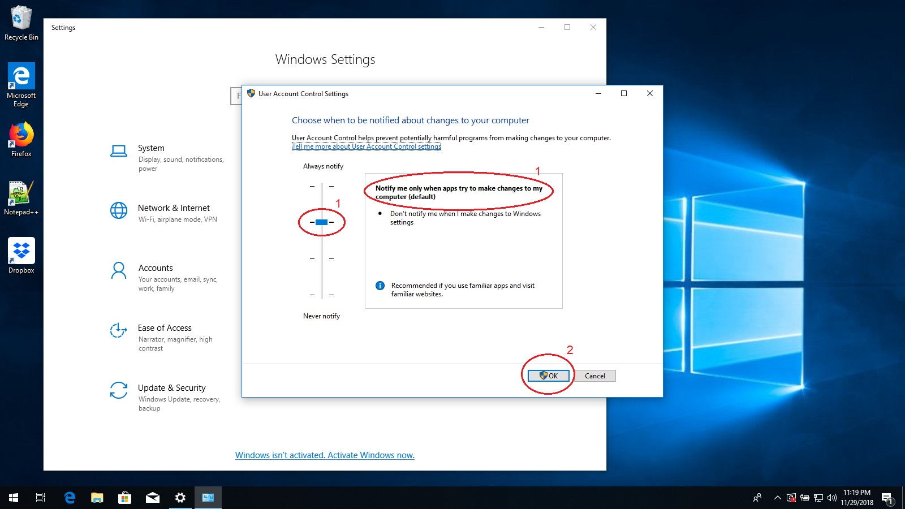

Enabling UAC
UAC, also knows as User Account Control, is a Windows security feature that limits what programs are allowed to do
without your permission. UAC can prevent malicious programs like viruses from accessing protected files or
bypassing other security features. The steps and pictures below will demonstrate how to turn on UAC.
-
First, click on the start button and then the settings gear.

-
When the Settings app opens, click on the "Search" box at the top and type in "uac".
-
Below the search box, the words "Change User Account Control settings" will appear. Click these words.

-
A window will open with a slider. Drag the slider to the second to the top position. The text to the right
will change to "Notify me only when apps try to make changes to my computer (default)".
-
Press the "OK" button.

-
You may see a message that says "Do you want to allow this app to make changes to your device?". If this
message appears, then press "Yes". If it does not appear, then skip this step.
-
Close the Settings app. Congratulations, UAC is now enabled and protecting your computer!